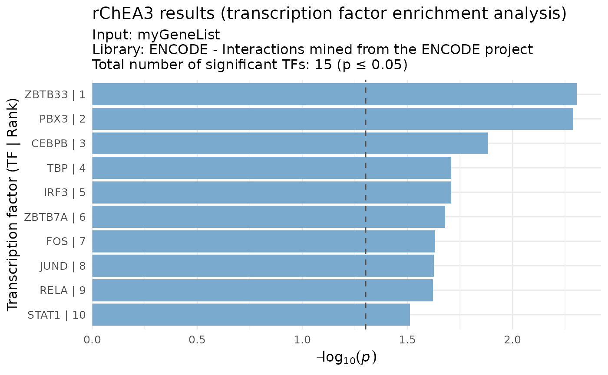

Visualize top transcription factors (TFs) from ChEA3 results
Source:R/visualizeRank.R
visualizeRank.RdCreate a bar plot of the most significant transcription factors from a
ChEA3 result table. The y-axis can be based on FDR, FET p-value,
or Score (for integrated results). Bars are ordered by rank (Rank = 1
at the top).
Usage
visualizeRank(
df_result,
y_metric = c("auto", "FDR", "FET p-value", "Score"),
fdr_threshold = 0.05,
p_threshold = 0.05,
query_name = "myGeneList",
title_plot = "rChEA3 results (transcription factor enrichment analysis)",
top_n = 10,
fill_color = "#7AAACE"
)Arguments
- df_result
A ChEA3 result data frame. Must contain at least columns:
TF(transcription factor symbol),Rank(integer rank). Optionally:FDR,FET p-value,Score.
- y_metric
Character; which metric to use on the y-axis. One of:
"auto"(default): use FDR if present, otherwise FET p-value, otherwise Score."FDR": use FDR (requiresFDRcolumn)."FET p-value": use Fisher’s exact test p-value (requiresFET p-valuecolumn)."Score": use Score (used in integrated meanRank/topRank).
- fdr_threshold
Numeric; FDR cutoff for significance (default
0.05). Used only ify_metric = "FDR".- p_threshold
Numeric; p-value cutoff for significance (default
0.05). Used only ify_metric = "FET p-value".- query_name
Character; name of the input gene set, shown in the subtitle (default
myGeneList)- title_plot
Character; main plot title (default
rChEA3 results (transcription factor enrichment analysis))- top_n
Integer; number of TFs to display (default
10). The subtitle reports the total number of significant TFs, while only the top_n by rank are plotted.- fill_color
Character; fill color of the bars (default
"#7AAACE").
Details
The plot subtitle automatically reports the number of significant TFs
(after filtering by fdr_threshold or p_threshold when applicable),
while top_n controls how many of those TFs are displayed. For
integrated collections (Mean Rank and Top Rank), the subtitle shows
a descriptive label instead of individual library names.
Examples
# \donttest{
# Example with integrated meanRank results
genes <- c("STAT3", "RELA", "MYC", "FOXO1", "TP53")
results <- queryChEA3(genes, verbose = FALSE)
meanRank_res <- results[["Integrated--meanRank"]]
visualizeRank(meanRank_res, y_metric = "Score", top_n = 15)
# Example with ChIP-seq results (FET p-value-based)
chip_res <- results[["ENCODE--ChIP-seq"]]
visualizeRank(chip_res, y_metric = "FET p-value")

# }